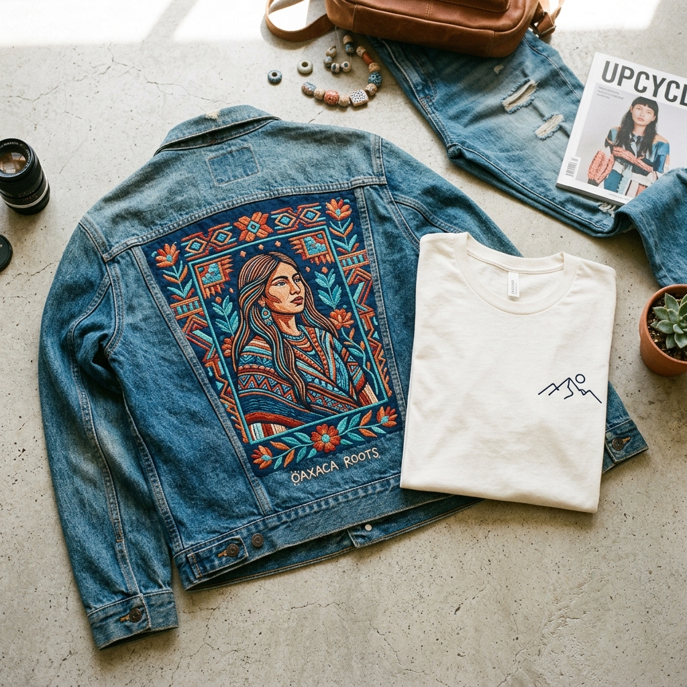

De lo básico a lo icónico: La tendencia de la ropa con identidad
Aceptémoslo: ir a una tienda de cadena, comprar una playera genérica y darte cuenta de que tres personas más en la misma fiesta traen tu mismo outfit puede ser una de las experiencias de estilo más letales. La ropa básica cumple su función, sí, pero rápidamente puede volverse aburrida y vacía. Hoy en día, la verdadera moda juvenil no se trata de usar la misma marca que todos los demás; se trata de usar prendas únicas que griten quién eres.
Es aquí donde nace el movimiento de transformar lo ordinario en extraordinario. Si quieres elevar tu estilo en el Istmo de Tehuantepec, la respuesta es simple: personaliza tu ropa. Añadir diseños exclusivos mediante bordado digital es la manera más auténtica, estética y revolucionaria de comunicar tu personalidad sin decir una sola palabra.
¿Qué prendas puedes traer? (El catálogo de ideas para customizar)
Lo genial de esta tendencia es la libertad. No es solo ponerle un logo de trabajo a una prenda, es usar hilos de colores vibrantes para inyectar actitud. Aquí te dejamos nuestras ideas favoritas de las prendas que puedes traer a nuestro taller y cómo podemos transformarlas:
- Chamarras de mezclilla (El lienzo perfecto): Una chamarra vintage o denim sobrecargada de bordado es el Santo Grial del 'street style'. Son ideales para bordar la espalda completa con diseños grandes que rompan esquemas: el logo de esa banda de indie rock que amas, intrincadas calaveras botánicas, arte Zapoteca reimaginado, ilustraciones japonesas o la cubierta de tu anime favorito.
- Playeras básicas y sudaderas (hoodies): La perfección del bordado "aesthetic". Estas prendas son perfectas para bordados minimalistas en el pecho. Imagina llevar el contorno de línea (silueta) de tu mascota, frases cortas sarcásticas, las coordenadas de tu lugar favorito, fechas especiales o pequeños motivos gráficos delineados en alto contraste.
- Camisas y Blusas: Para cuando quieres un toque creativo pero sutil. Bordamos pequeños detalles casi secretos: una florecita escondida en el interior del puño, tus iniciales en el cuello de tu camisa blanca favorita, o pequeños asteriscos y estrellas brillantes distribuidas a lo largo del botón principal.
El Proceso: Trae tus prendas favoritas, nosotros hacemos la magia
Queremos ser súper claros: no necesitas comprarnos la ropa a nosotros. El concepto de la moda circular y de customizar ropa trata sobre darle una segunda, tercera o quinta vida a esas prendas que ya habitan en tu clóset. Puedes traer con toda confianza esa playera súper cómoda que amas o la chamarra denim que has guardado por tres años esperando su momento de brillar.
La ventaja de crear tu ropa personalizada con nuestra tecnología de bordado digital es que aseguramos un acabado hiper-profesional. Nuestras máquinas saben exactamente cómo tratar desde el duro algodón de una mezclilla hasta la tela de tu sudadera. El bordado digital no maltrata tus prendas favoritas; las cuida, las refuerza y les da un acabado premium que ninguna pintura acrílica casera lograría.
Un regalo inigualable: Algo que no se compra en vitrinas
¿Se acerca un cumpleaños importante o el aniversario con tu pareja? Olvídense de los centros comerciales. Personalizar una prenda es el mejor regalo que le puedes dar a alguien. Nada compite con abrir una caja y encontrar una chamarra o una hoodie que tiene bordada la canción de ambos, un retrato lineal minimalista o esa broma local que los hace llorar de risa. Demuestra que el regalo no fue comprado a las prisas, sino que fue pensado exclusivamente para esa persona.
"El estilo real no se compra en masa, se interviene con imaginación. Cuando personalizas tus prendas, tu guardarropa se convierte en el reflejo absoluto de tu actitud."
✨ Saca esa chamarra de tu armario
Te invitamos a echar un vistazo a tu clóset. Busca esa playera, chamarra o camisa que merece renacer. Toma una foto del diseño que te imaginas, mándanos un mensaje por WhatsApp ¡y juntos lo haremos realidad!
Cotizar por WhatsApp Cotizar en línea